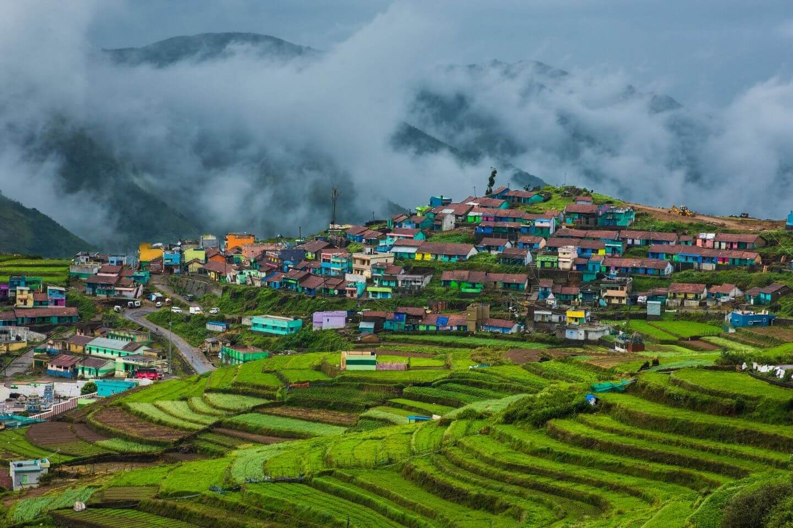

Chennai
Marina Beach, historic temples, and vibrant culture.
Madurai
Famous for Meenakshi Temple and ancient heritage.

Ooty
Scenic hill station with tea gardens and lakes.
Kanyakumari
Sunrise and sunset views at the southern tip of India.

Coimbatore
Industrial city with serene temples and waterfalls.

Thanjavur
Home to the majestic Brihadeeswarar Temple.
Rameswaram
Spiritual city known for Ramanathaswamy Temple.
Yercaud
A peaceful hill station with coffee plantations.

Kodaikanal
Famous for misty hills and beautiful lakes.

Vellore
Renowned for its golden temple and historic fort.

Mahabalipuram
UNESCO heritage site with rock-cut temples.

Tirunelveli
Famous for Halwa and natural waterfalls.
Dhanushkodi
Ghost town with stunning beaches and history.
Mudumalai
Wildlife sanctuary with rich biodiversity.
Kumbakonam
City of temples and traditional filter coffee.